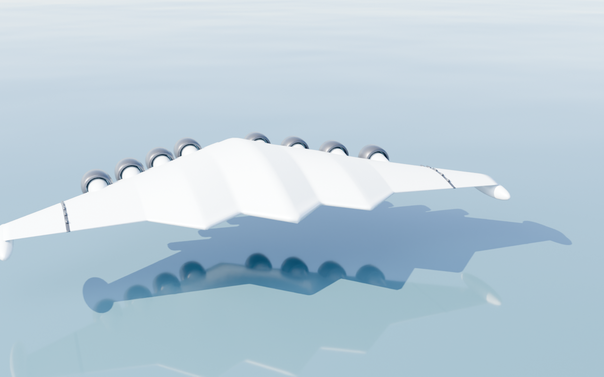
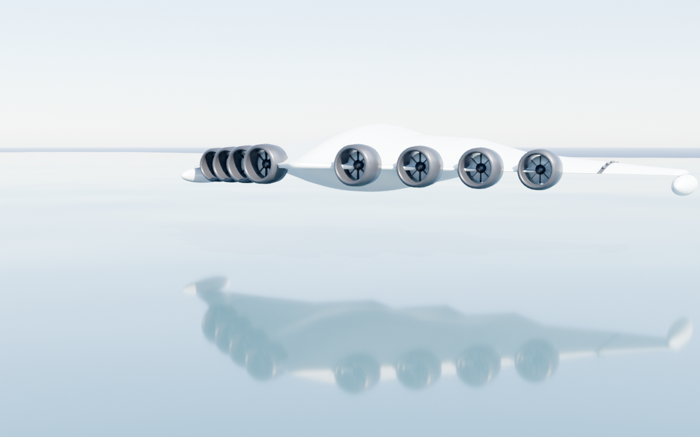
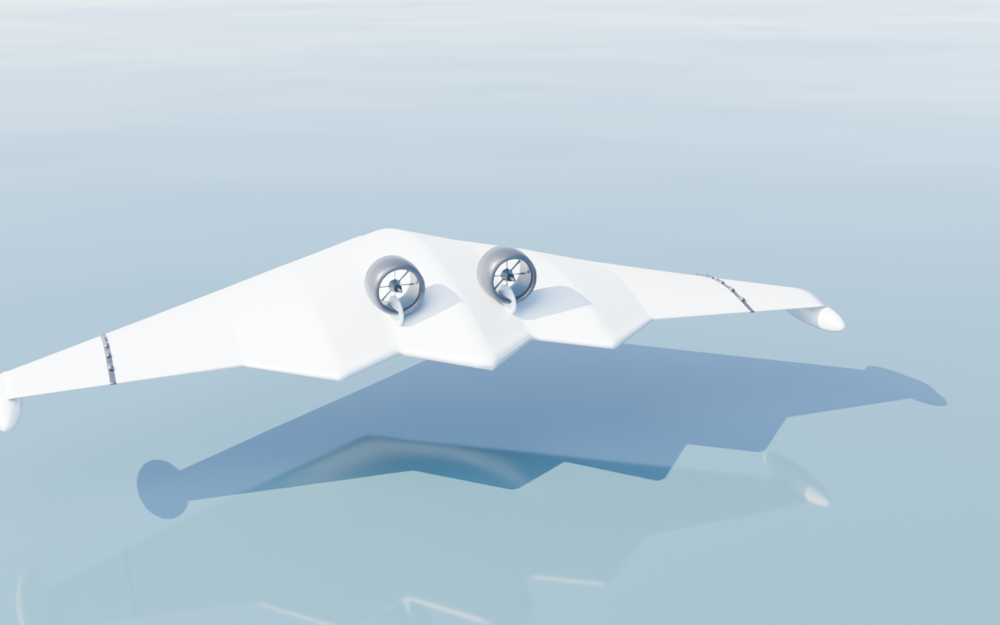
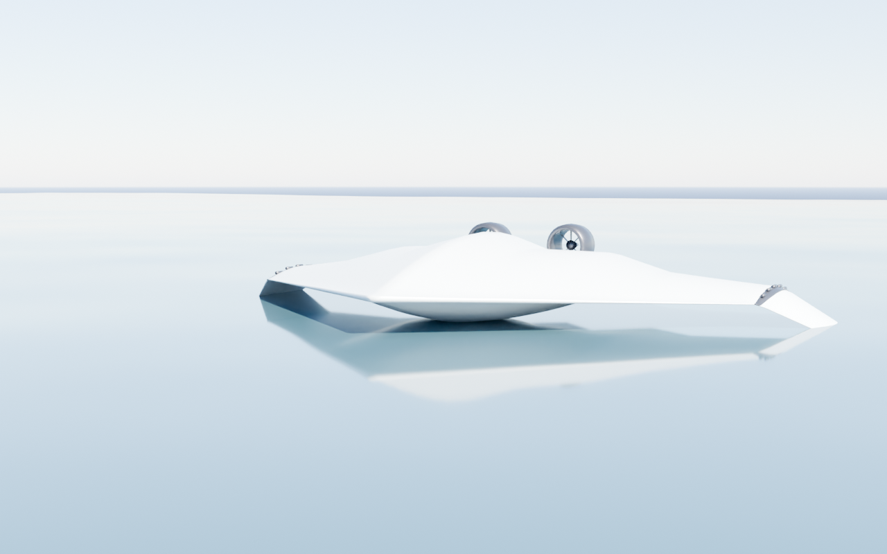

Same airframe, two propulsion philosophies. Plus the hull now displacing water in hull-borne mode.

Distributed electric propulsion washing the whole wing — the X-57/Electra high-lift approach, matches your "Distributed Electric Propulsion" tech pillar literally.


Cleaner, stealthier deck; fewer, larger fans near the centerline.

Mid-hull immersed and displacing; floats + folded wings adding roll stability. Can sit deeper if you want more visible displacement.